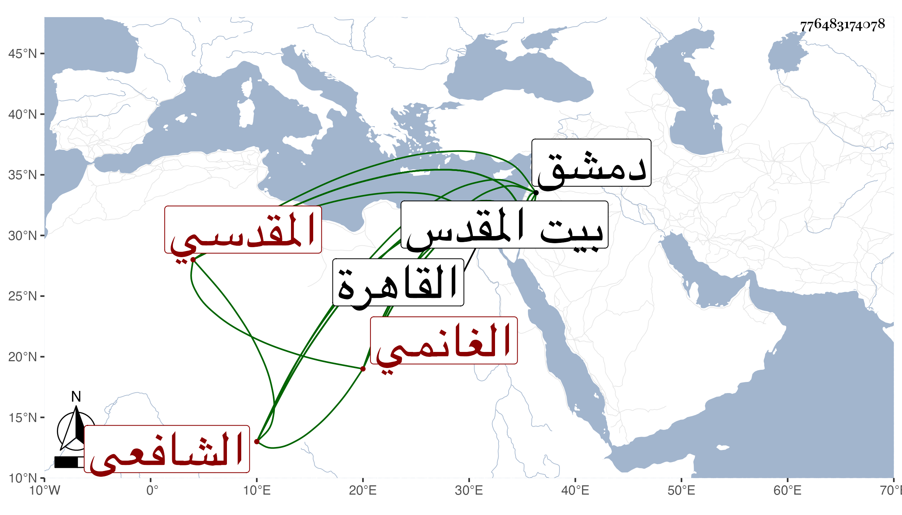

0902Sakhawi.DawLamic.ITO20230111-ara1.EIS1600.776483174078
Biography ID: 776483174078
239
محمد بن عبد الله بن محمد بن محمد بن غانم ناصر الدين بن الجمال بن ناصر الدين الغانمي نسبة لغانم المقدسي الشهير المقدسي الشافعي ابن شيخ الحرم . ولد سنة سبع وعشرين وثمانمائة ببيت المقدس ونشأ به فخفظ القرآن والتنبيه وعرضه على العز المقدسي وغيره وقرأ في الفقه على العماد بن شرف والزين ماهر وغيرهما وقدم القاهرة غير مرة وأخذ فيها أيضا عن السيد النسابة وامام الكاملية وغيرهما وكذا ارتحل لدمشق وأخذ بها عن البلاطنسي والبدر بن قاضي شهبة والزين خطاب وآخرين وسمع معنا في بيت المقدس على الجمال بن جماعة والتقي القلقشندي وجماعة وأجاز له باستدعاء الكمال بن أبي شريف غير واحد وحج غير مرة وباشر مشيخة الحرم بالقدس نيابة عن ابنه واستقلالا وكذا استقر في مشيخة الصوفية بالصلاحية شريكا لجلال الدين حفيد ابن جماعة مع غيرها من الجهات وهو انسان عاقل متودد .
